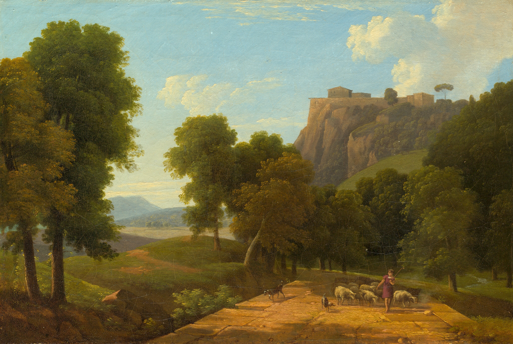
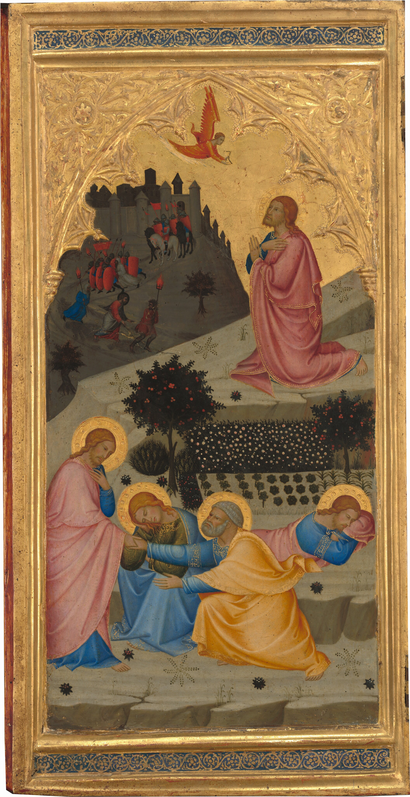
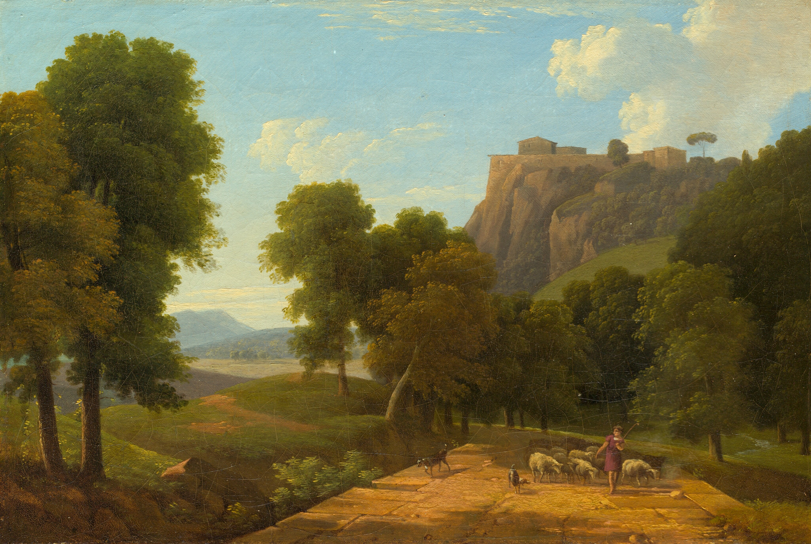
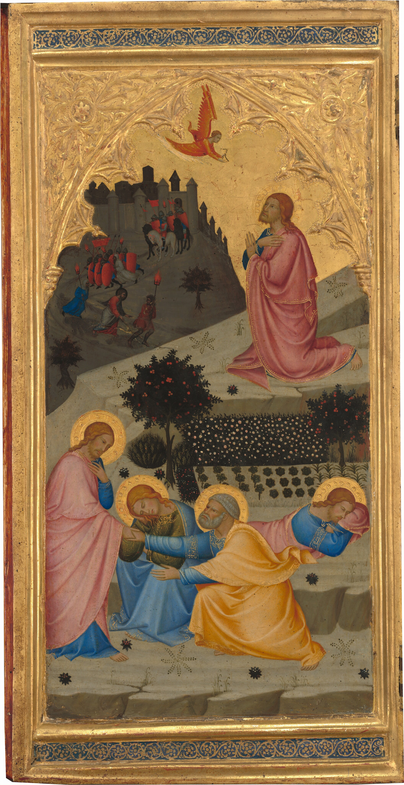

Tactile Art
Start your tactile journey here.
Filters
Gallery

 





Artist: Edvard Munch, 1893
The Scream is a proto-expressionist artwork. The work is made with tempera paint and grease pencil on plate. It is ninety-one centimeters high and seventy-five centimeters wide. In the middle of the motif is a deformed human figure standing by a railing, simplified, who grabs around his own face with his hands and screams. The sky above the subject is dramatic in red and orange tones. On the horizon, ships can be seen on a dark, blue-green fjord, and by the railing where the main character stands, two people walk in the background.
Provided by Museum of Modern Art (MoMA) under Fair Use and Non-Commercial Purposes
Firm, unyielding surface with no give.
Malleable, lightweight, good for beginners
Malleable, lightweight, good for beginners